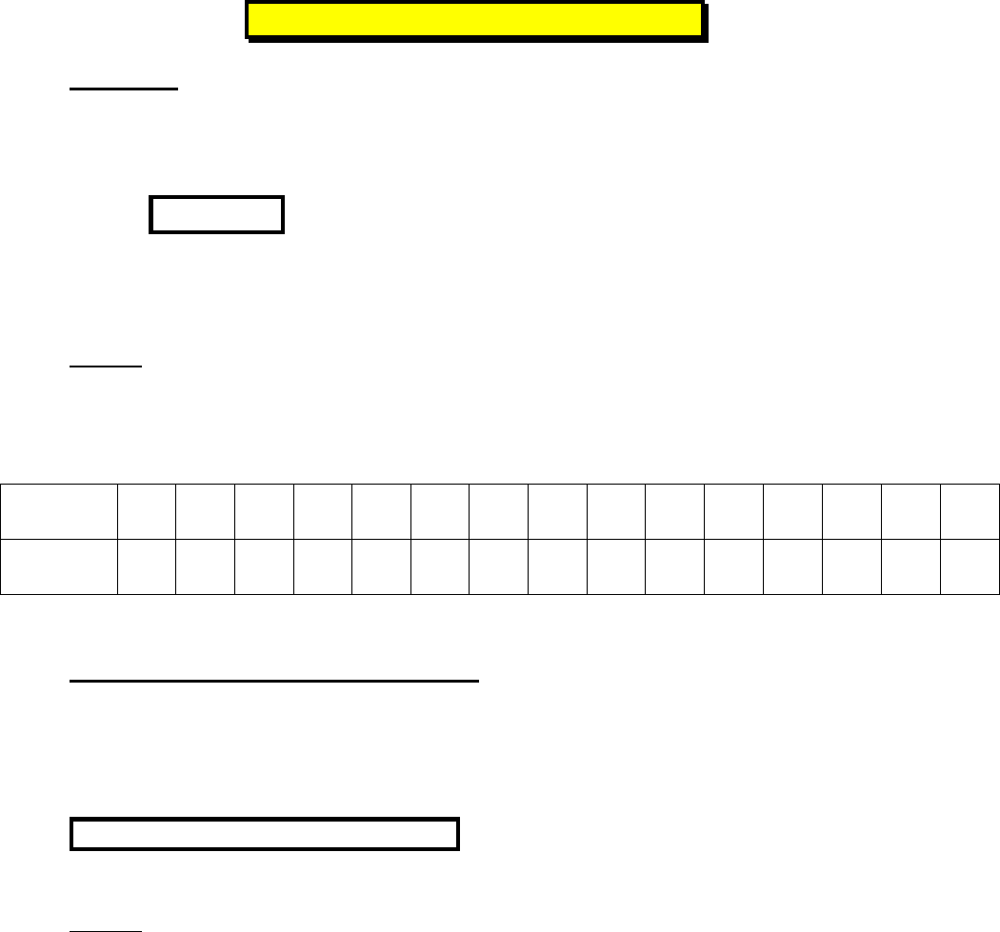

1/4
FONCTION NUM€RIQUE
1) D•finitions
Une fonction f (num€rique d’une variable r€elle) permet d’associer ‚ un nombre r€el x, un
nombre r€el et un seul not€ f(x).
On note
. On lit : ƒ f fonction qui ‚ x associe f de x „.
On dit que le nombre y = f(x) est l’image du nombre x par la fonction f.
On dit que le nombre x est un ant•c•dent du nombre y = f(x).
Exemple : soit la fonction
2
f x f x x
.
Calculer l’image de x = – 1 puis de x = 3.
Calculer le ou les ant€c€dents de y = – 1.
Compl€ter le tableau suivant, appel€ tableau de valeurs
2) Repr•sentation graphique d’une fonction
Dans un rep…re, la repr€sentation graphique ou courbe repr€sentative C d’une fonction
, est form€e de tous les points M de coordonn€es (x ; y) tels que y = f(x) lorsque
f(x) existe.
M (x ; y) C signifie f(x) existe et y = f(x) .
Exemple : la repr€sentation graphique de la fonction
2
f x f x x
, est la courbe :
x
– 4 – 3 – 2 – 1 0 1 2 3 4 2,5 – 2,5 1,5 – 3,5 – 1,5 3,5
y = f(x)
= x
2
– 4